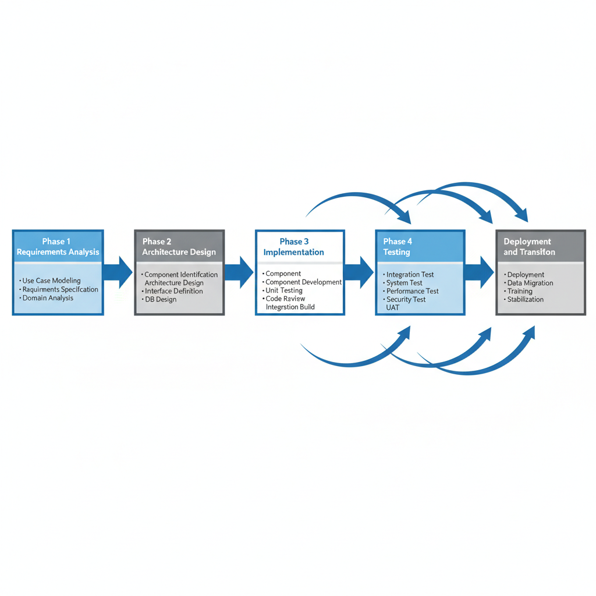
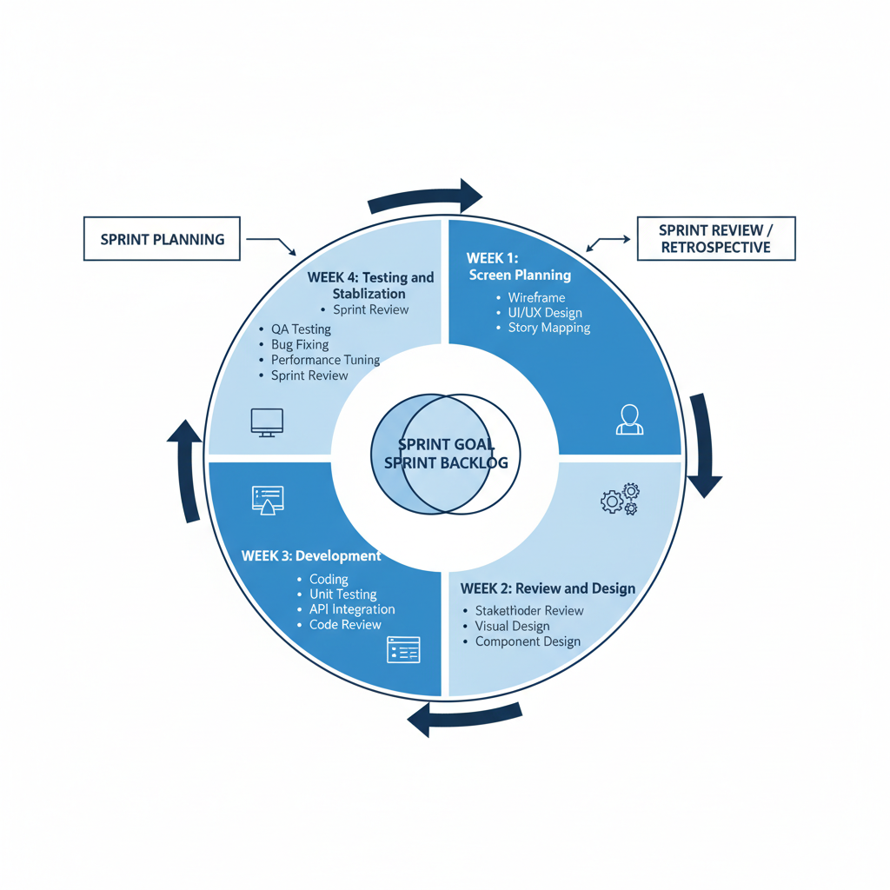

본 사업은 중소벤처기업진흥공단(온라인수출처)이 운영하는 온라인수출플랫폼(고비즈코리아) 의 전면 재구축과 클라우드 전환을 목적으로 합니다. 디지털 무역의 급격한 성장에 따라 국내 중소기업의 온라인 수출 참여가 확대되고 있으며, 이에 발맞추어 고비즈코리아가 차세대 플랫폼으로 도약하기 위해 데이터 표준 체계 수립, 문서관리 고도화, 기술 스택 현대화, 클라우드 전환이 필요한 시점입니다.
본 컨소시엄은 베트남 온라인 수출플랫폼 모델 전수 ODA 사업(중진공 발주, 2024.09 착수~2025.11 완료, 전체 사업규모 3,116,500천원)을 통해 Gobiz Vietnam을 직접 구축하여 고비즈코리아의 업무 프로세스와 데이터 구조를 실무적으로 파악하고 있습니다.
| 사업 목적 | 내용 | 대응 요구사항 |
|---|---|---|
| 플랫폼 현대화 | 4개 사이트(국문/영문/관리자/통합정보) 전면 재구축 | SFR-004, 005, 009, 012 |
| 클라우드 전환 | 민간클라우드 기반 하이브리드 인프라 구성 | SFR-001, 002 |
| 데이터 표준화 | 수출 데이터 아키텍처 수립 및 통계 고도화 | SFR-006, 007, DAR-001~009 |
| 사용자 경험 혁신 | 디지털 정부서비스 UI/UX 가이드라인 준수 재설계 | INR-001~012 |
| 기관 연계 강화 | 수출유관기관 API 기반 통합 연계 | SFR-011, 013 |
고비즈코리아가 차세대 온라인 수출 플랫폼으로 도약하기 위해 다음 4대 핵심 과제의 전략적 추진이 필요합니다. 각 과제는 상호 유기적으로 연결되어, 데이터 표준화는 정확한 수출 통계로, 문서관리 체계화는 효율적 유지보수로, 기술 현대화는 안전한 서비스로, 클라우드 전환은 민첩한 대응력으로 이어집니다.
[그림 2-1] 플랫폼 발전을 위한 4대 핵심 과제
운영체제부터 프레임워크, 데이터베이스, 프론트엔드에 이르기까지 전 영역에 걸친 기술 현대화를 통해 현대 기술력을 소화할 수 있는 구조로 전환합니다. 특히 전자정부 표준프레임워크 5.0 업그레이드(Spring Boot 3.x, Open JDK 17/21/23)와 Git 기반 형상관리·CI/CD 도입은 보안 강화와 개발 생산성 향상을 동시에 달성하는 핵심 전환 포인트입니다.
[그림 2-2] 기술 스택 현대화 비교 (AS-IS → TO-BE)
현행 인프라 구조에서는 수출지원사업 신청 시기의 트래픽 급증이나 해외바이어의 다양한 시간대 접속 등 다양한 상황에 빠르게 대처하기 어렵습니다. 클라우드 전환은 비즈니스 요구, 기술 환경 변화, 정부 정책 방향이라는 3가지 동인에 의해 추진되며, 구체적 기대효과를 제시합니다.
[그림 2-3] 클라우드 전환 필요성 및 기대효과
| 구분 | 내용 |
|---|---|
| 사업 범위 | 4개 사이트(국문/영문/관리자/통합정보) 전면 재구축, 민간클라우드 전환, Oracle→MariaDB 마이그레이션, 외부기관 API 연계 |
| 사업 기간 | 계약체결일로부터 270일(약 9개월) |
| 전제조건 | 전자정부 표준프레임워크 5.0 적용, 민간클라우드 + 중진공 IDC 하이브리드 구성, 디지털정부서비스 UI/UX 가이드라인 준수 |
| 제외 범위 | 기존 시스템 운영/유지보수, 하드웨어 조달, 외부기관 시스템 개발 |
민간클라우드와 중진공 IDC를 IPsec VPN으로 연결하는 하이브리드 클라우드 환경 위에, K8s 컨테이너 오케스트레이션을 적용하여 오토스케일링·무중단 배포·자동 복구가 가능한 인프라를 구축합니다.
[그림 2-4] TO-BE 목표 시스템 구성 개요
본 컨소시엄은 플랫폼 전면 재구축, 클라우드 전환, 통합정보 고도화의 3대 축으로 차별화된 사업 추진 방향을 제시합니다.
[그림 2-5] 사업 추진 방향 3대 축
| 차별화 요소 | 내용 | 근거 |
|---|---|---|
| 동일 플랫폼 구축 경험 | Gobiz Vietnam(고비즈코리아 베트남 버전)을 직접 구축하여 업무 프로세스·데이터 구조 실무 파악 | ODA 사업 467백만원, 동일 발주기관 |
| K8s 실운영 + VortexUI | APEX/FECT에서 K8s + Blue/Green 배포 실운영, VortexUI(React 19 + Next.js 16) 자체 프론트엔드 플랫폼 보유 | SFR-001, COR-001 |
| 수출 도메인 전문성 | 관세사(대표) + KOTRA AI무역지원센터 3개소 운영, 수출 업무 심층 이해 | 8년 연속 FTA Korea 운영 |
컨소시엄 강점: 아스트라비전은 ODA 사업으로 Gobiz Vietnam을 구축하고, KOTRA AI무역지원센터 3개소를 운영하여 고비즈코리아의 업무 프로세스를 실무적으로 파악하고 있습니다. 퀸텟시스템즈는 AWS ISV Partner로서 MSA/멀티테넌트 아키텍처 운영 경험을 보유하고 있습니다.
본 컨소시엄은 "안전한 전환, 진화하는 플랫폼, 지속 가능한 성장" 이라는 비전 아래, 고비즈코리아를 차세대 온라인 수출 플랫폼으로 도약시키기 위한 3대 핵심 전략을 수립하였습니다.
[그림 2-6] 핵심 전략 방향
| 전략 원칙 | 핵심 목표 | 구현 방안 | 대응 요구사항 |
|---|---|---|---|
| 무중단 안전 전환 | 서비스 중단 제로 | Blue/Green 배포 + 단계적 마이그레이션 + 자동 롤백 | SFR-001, SFR-002 |
| 클라우드 네이티브 | 탄력적 인프라 확보 | K8s 오토스케일링 + GitLab CI/CD + ArgoCD 자동 배포 | SFR-001, PER-001 |
| 데이터 기반 혁신 | 수출 데이터 가치 창출 | 데이터 표준 체계 + 공공마이데이터 연계 + 통계 고도화 | SFR-006, DAR-001 |
| 발주처 Pain Point | 해결 전략 | 기대 효과 |
|---|---|---|
| 수출지원사업 신청 시기 트래픽 급증 | K8s HPA 오토스케일링으로 자동 확장 | 동시 접속 무제한 확장 |
| 해외바이어 접속 속도 저하 | CDN + Next.js 16 SSG 정적 사이트 배포 | 글로벌 접속 70%+ 개선 |
| 배포 시 서비스 중단 | Rolling/Blue-Green/Canary 적응형 무중단 배포 | 서비스 중단 제로 |
| 노후 기술 스택 | 전자정부 FW 5.0 + VortexUI(React 19 + Next.js 16) 프론트엔드 이원화 | 기술부채 해소 |
프로젝트를 기반 구축 → 핵심 개발 → 검증·안정화의 3단계로 나누어, 각 단계의 핵심 목표에 집중하는 점진적 접근 전략을 적용합니다.
[그림 2-7] 단계별 추진 전략
| 단계 | 기간 | 핵심 목표 | 주요 활동 | 마일스톤 |
|---|---|---|---|---|
| PHASE 1: 기반 구축 | M ~ M+3 | 안전한 전환 기반 확보 | 현행 분석, 하이브리드 클라우드 인프라 구축, DB 스키마 설계, CI/CD 구축(GitLab CI + Harbor + ArgoCD), 전자정부 FW 5.0 환경 구성 | 착수보고회 |
| PHASE 2: 핵심 개발 | M+3 ~ M+6 | 4개 사이트 기능 구현 | 국문/영문 VortexUI(React 19 + Next.js 16) 개발, 관리자/통합정보 Nexacro N V24 개발, Oracle→MariaDB 마이그레이션, 외부기관 API 연계, CBD 4주 스프린트×4 | 중간보고회 |
| PHASE 3: 검증·안정화 | M+6 ~ M+8 | 무결점 오픈 | 성능·보안·접근성 통합 테스트, Blue/Green 무중단 전환 실행, 사용자 교육, 시범운영 및 안정화 | 최종보고회 |
PHASE 1 — "실패 없는 전환 기반 확보"
PHASE 2 — "CBD 컴포넌트 기반 민첩한 구축"
PHASE 3 — "안전한 오픈, 무결점 인수인계"
본 사업은 5만여 개 중소기업과 글로벌 바이어가 실시간 거래하는 플랫폼 특성을 고려하여, 단계적 전환(Phased Rollout) + Blue/Green 배포를 채택합니다.
[그림 2-8] 안정적 전환/오픈 전략
| 비교 항목 | 빅뱅(일괄 전환) | 단계적 전환 (Phased Rollout) |
|---|---|---|
| 서비스 중단 위험 | 높음 (전면 중단) | 낮음 (사이트별 순차 전환) |
| 롤백 용이성 | 어려움 (전체 롤백) | 용이 (개별 사이트 롤백) |
| 리스크 수준 | 높음 | 단계별 분산 |
| 전환 기간 | 짧음 (1회) | 길지만 안전 (4단계) |
| 본 사업 적합성 | 미선정 | 채택 |
단계적 전환 로드맵
| STEP | 대상 | 주요 활동 | 검증 기간 |
|---|---|---|---|
| 1. 사전 검증 | 전체 | 전환 리허설 2회, 데이터 정합성 검증, 롤백 시나리오 확인 | 2주 |
| 2. 관리자 전환 | 관리자사이트 | 내부 사용자 우선 전환, 1주간 안정성 확인 | 1주 |
| 3. 국문사이트 | 국문사이트 | Blue/Green 전환, 트래픽 모니터링, 사용자 피드백 수집 | 1주 |
| 4. 영문사이트 | 영문사이트 | CDN 글로벌 캐싱 확인, 해외 접속 성능 검증 | 1주 |
| 5. 통합정보 | 통합정보시스템 | 기관 연계 최종 확인, 전체 안정화 선언 | 1주 |
오픈 전후 안정화 대응
| 시점 | 기간 | 핵심 활동 |
|---|---|---|
| 오픈 전 (D-14) | 2주 | 전환 리허설, 성능 부하 테스트, 롤백 시나리오 확인, 비상 연락망 구성 |
| 오픈 당일 (D-Day) | 1일 | Blue/Green 전환, 전담팀 24시간 대기, 실시간 모니터링, 5분 롤백 대기 |
| 오픈 후 (D+30) | 30일 | 집중 모니터링, 긴급 패치 체계, 사용자 피드백 대응, 성능 최적화 |
본 사업 추진을 통해 다음과 같은 정량적·정성적 기대효과를 달성합니다.
| 구분 | 기대효과 | 목표 수치 | 달성 방안 |
|---|---|---|---|
| 서비스 안정성 | 시스템 가용성 향상 | 99.9% 이상 | K8s HA 구성 + Blue/Green 무중단 배포 + 자동 복구 |
| 사용자 경험 | 페이지 응답시간 단축 | 3초 이내(CDN 정적 1초 이내) | CDN + Next.js 16 SSG + Nginx 캐싱 + 오토스케일링 |
| 글로벌 접근성 | 해외 접속 속도 개선 | 70%+ 개선 | CDN 글로벌 캐싱 + 정적 사이트 배포 |
| 운영 효율성 | 배포 주기 단축 | 30배 단축 | GitLab CI + Harbor + ArgoCD 자동 배포 |
| 비용 절감 | DB 라이선스 비용 절감 | Oracle→MariaDB | 공개SW 전환으로 연간 라이선스 비용 절감 |
| 보안 강화 | 보안 취약점 제로 | 0건 | 시큐어코딩 상시 적용 + 정적/동적 보안 분석 |
| 데이터 활용 | 수출 통계 정확도 향상 | 데이터 표준 체계 수립 | 표준 코드 체계 + 공공마이데이터 연계 |
| 확장성 확보 | 트래픽 급증 자동 대응 | 무제한 확장 | K8s HPA 오토스케일링 |
본 컨소시엄은 유사 프로젝트 경험을 기반으로 핵심 리스크를 사전 식별하고, 선제적 대응 전략을 수립하였습니다.
[그림 2-9] 리스크 최소화 전략
| 리스크 | 영향도 | 확률 | 선제적 대응 전략 | 컨소시엄 경험 근거 |
|---|---|---|---|---|
| 데이터 마이그레이션 실패 | 상 | 중 | 단계별 마이그레이션(검증→병행운영→전환→롤백), 건별 정합성 자동 검증, Oracle↔MariaDB 호환성 사전 PoC | VLE 11개사 대용량 마이그레이션 성공 |
| 기관 연계 장애 | 상 | 중 | Mock 서버 기반 선행 개발, 연계기관별 사전 협의, API 장애 시 Fallback 처리 | FECT 베트남 세관 VNACCS 연계, FTA Korea 관세청 API |
| 일정 지연 | 상 | 하 | 4주 스프린트 기반 조기 경보, 크리티컬 패스 집중 관리, 인력 추가 투입 체계 확보 | ODA 사업 270일 내 성공 수행 |
| 요구사항 변경 | 중 | 중 | 4주 스프린트 리뷰 조기 피드백, CCB(변경관리위원회) 운영, 변경 영향분석 절차 | FTA Korea 8년간 공공시스템 변경관리 |
| 성능 미달 | 중 | 하 | 성능 테스트 자동화(JMeter/K6), 병목 구간 사전 식별, 오토스케일링 정책 최적화 | APEX 250개 기업 동시 서비스 |
| 보안 취약점 | 상 | 하 | 시큐어코딩 상시 적용, 정적/동적 보안 분석, 국정원 보안성 검토 대비 | FTA Korea 8년간 보안 준수 실적 |
| 원칙 | 적용 방법 |
|---|---|
| 선제적 예방 | 과거 유사 프로젝트 경험 기반 리스크 사전 식별, PoC 수행 |
| 단계별 검증 | 각 Phase 종료 시 리스크 재평가, 리스크 등록부 갱신 |
| 즉시 대응 | 24시간 내 대응 원칙, PM→PD→경영진 3단계 에스컬레이션 |
리스크 관리의 상세 절차(리스크 등록부 관리, 에스컬레이션 경로, 대응 이력 추적)는 V. 프로젝트 관리 > 1.1 위험 관리에서 상세히 기술합니다.
[그림 2-10] 기술 전략 개요
본 사업의 기술 스택은 RFP 지정 요건과 클라우드 네이티브 최적화를 기준으로 선정하였습니다.
| 영역 | 기술 스택 | 선정 근거 | 기대 효과 |
|---|---|---|---|
| 인프라 | K8s + 하이브리드 클라우드 | RFP 지정 민간클라우드 + 중진공 IDC 연계 필수(SFR-001) | 오토스케일링, 가용성 99.9% |
| 백엔드 | eGov FW 5.0 + Spring Boot 3.x | RFP 의무사항, 공공시스템 표준 준수(COR-001) | 기술부채 해소, 최신 보안 패치 |
| 프론트(대민) | VortexUI — React 19 + Next.js 16 SSG | 반응형 웹, SEO 최적화, 디지털정부서비스 가이드라인 | CDN 글로벌 배포, 디자인 유연성 |
| 프론트(행정) | Nexacro N V24 | RFP 지정 SW, 대량 데이터 그리드 처리 최적화 | 업무 양식 표준화, 업무 효율성 |
| 데이터 | MariaDB HA + Oracle(기존) | 공개SW 전환 요구, 기존 Oracle 병행(SFR-006) | 라이선스 비용 절감 |
| DevOps | GitLab CE + Harbor + ArgoCD | 100% 오픈소스, SCM+CI 통합 단일 플랫폼 | 배포 주기 30배 단축 |
| 설계 원칙 | 구현 방안 | 대응 요구사항 |
|---|---|---|
| 확장성 (Scalability) | K8s HPA로 CPU/메모리 기반 자동 스케일링, 수출지원사업 신청 시기 트래픽 급증 자동 대응 | SFR-001, PER-004 |
| 안정성 (Reliability) | MariaDB HA 이중화, Blue/Green 무중단 배포, 자동 Health Check 및 장애 복구, 수 초 이내 롤백 | PER-001, SFR-002 |
| 성능 (Performance) | CDN 글로벌 캐싱 + Next.js 16 SSG 정적 배포, Nginx 리버스 프록시, 응답시간 3초 이내(CDN 정적 1초 이내) | PER-003, SFR-005 |
본 사업은 4개 사이트의 특성에 따라 프론트엔드 기술을 이원화하여 적용합니다.
| 사이트 | 사용자 | 기술 스택 | 선정 이유 |
|---|---|---|---|
| 국문사이트 | 국내 중소기업 | VortexUI (React 19 + Next.js 16 SSG) | 반응형 웹, SEO, 디지털정부서비스 가이드라인 |
| 영문사이트 | 해외 바이어 | VortexUI (React 19 + Next.js 16 SSG) | CDN 글로벌 배포, 다국어, 빠른 로딩 |
| 관리자사이트 | 내부 운영자 | Nexacro N V24 | 대량 데이터 그리드, 업무 양식 표준화 |
| 통합정보시스템 | 기관 담당자 | Nexacro N V24 | 통계 대시보드, 대용량 데이터 처리 |
배포 규모와 위험도에 따라 3대 배포 전략을 선택 적용하는 적응형 배포 체계를 구축합니다.
| 배포 전략 | 적용 비율 | 핵심 가치 | 적용 대상 | 롤백 소요시간 |
|---|---|---|---|---|
| Rolling Update | ~85% | 안정성 + 효율성 | 일상적 패치, 설정 변경, 버그 수정 | 1~3분 |
| Blue/Green | ~10% | 즉시 전환 + 즉시 롤백 | 대규모 릴리스, DB 스키마 변경 | 수 초 |
| Canary | ~5% | 리스크 사전 검증 | 신규 기능, 성능 영향 불확실 변경 | 수 초 |
자동 롤백 조건: HTTP 5xx 에러율 배포 전 대비 2배 이상, P99 응답시간 3초 초과, Health Check 연속 실패 3회 → 사람 개입 없이 즉시 자동 롤백
Oracle(중진공 IDC) → ETL 변환(스키마 변환·데이터 정제·매핑) → 정합성 검증(건별 자동 비교·무결성 확인) → MariaDB HA(민간클라우드 이중화 신규 DB)
| 마이그레이션 단계 | 내용 | 리스크 대응 |
|---|---|---|
| 사전 분석 | Oracle 프로시저/함수 호환성 매핑표 작성 | Oracle↔MariaDB PoC 수행 |
| 데이터 추출 | ETL 도구 기반 스키마 변환, 데이터 정제 | 변환 규칙 사전 검증 |
| 정합성 검증 | 건별 자동 비교, 무결성 리포트 생성 | 100% 일치 확인 후 진행 |
| 전환 실행 | 병행 운영 기간 후 최종 전환 | 5분 이내 롤백 체계 구축 |
데이터 마이그레이션의 상세 검증 방안 및 에러 처리 절차는 III. 기술 및 기능 > 2. 데이터 요구사항에서 상세히 기술합니다.
PHASE 1 기반 구축 단계에서 핵심 기술 요소에 대한 PoC(Proof of Concept) 및 프로토타입을 개발하여 기술 리스크를 사전 검증합니다.
| 프로토타입 영역 | 검증 목표 | 시기 | 산출물 |
|---|---|---|---|
| VortexUI 국문사이트 | React 19 + Next.js 16 SSG 기반 국문사이트 메인 페이지 프로토타입 | M+1 ~ M+2 | UI 프로토타입, 디자인 시안 |
| K8s 오토스케일링 | HPA 기반 트래픽 급증 대응 검증 | M+1 | 부하테스트 결과 리포트 |
| Oracle→MariaDB | 프로시저/함수 호환성 검증, 데이터 정합성 확인 | M+1 ~ M+2 | 호환성 매핑표, PoC 리포트 |
| Blue/Green 배포 | 무중단 전환 및 롤백 시나리오 검증 | M+2 | 배포 시나리오 결과서 |
| 외부기관 API 연계 | 수출유관기관 API Mock 서버 기반 연계 검증 | M+2 ~ M+3 | API 연계 테스트 결과 |
프로토타입 개발 → 발주처 시연 및 피드백 → 보완 반영 → 설계 확정의 프로세스를 통해, 본 개발 착수 전에 핵심 기술 요소의 적합성을 확인합니다. 프로토타입 검증 결과는 착수보고회에서 발주처에 보고하고, PHASE 2 본개발 설계에 직접 반영합니다.
본 사업은 RFP 의무사항에 따라 전자정부 표준프레임워크 5.0을 적용합니다. 표준프레임워크 5.0은 Spring Boot 3.x 기반으로 전면 재구성되어, 클라우드 네이티브 환경에 최적화된 구조를 제공합니다.
| 구분 | 표준프레임워크 4.2 (현행) | 표준프레임워크 5.0 (목표) |
|---|---|---|
| 기반 프레임워크 | Spring Framework 5.x | Spring Boot 3.x |
| Java 버전 | JDK 8/11 | Open JDK 17/21/23 |
| 빌드 도구 | Maven 중심 | Gradle + Maven |
| 컨테이너 지원 | 제한적 | Docker/K8s 네이티브 |
| 보안 | Spring Security 기존 | Spring Security 6.x |
| 성능 | 동기 방식 중심 | WebFlux 리액티브 지원 |
| 적용 영역 | 적용 내용 | 비고 |
|---|---|---|
| 실행 환경 | Spring Boot 3.x 기반 서버 실행 환경 | 백엔드 전체 |
| 개발 환경 | eGovFrame IDE, 코드 생성기, 디버깅 도구 | 개발자 공통 |
| 운영 환경 | 배포 관리, 모니터링, 로그 관리 | K8s 환경 연동 |
| 관리 환경 | 사용자 인증/권한, 메뉴 관리, 코드 관리 | 관리자사이트 |
| 공통 컴포넌트 | 표준프레임워크 제공 공통기능 재사용 | 아래 4.2절 상세 |
전자정부 표준프레임워크가 제공하는 공통컴포넌트를 최대한 활용하여 개발 생산성을 높이고, 공공시스템 표준 준수를 보장합니다.
| 공통컴포넌트 영역 | 활용 컴포넌트 | 적용 대상 |
|---|---|---|
| 사용자 디렉토리/통합인증 | 로그인, 세션 관리, SSO, 권한 관리 | 4개 사이트 공통 |
| 통계/리포팅 | 통계 조회, 차트 생성, 리포트 출력 | 통합정보시스템 |
| 협업 | 게시판, 공지사항, FAQ, QnA | 국문/영문사이트 |
| 시스템 관리 | 코드 관리, 메뉴 관리, 배치 관리 | 관리자사이트 |
| 연계/통합 | 외부시스템 연계 어댑터, 메시지 큐 | 기관 연계 |
표준프레임워크 공통컴포넌트로 충족되지 않는 본 사업 고유의 기능은 CBD 방법론에 따라 재사용 가능한 커스텀 컴포넌트로 개발합니다.
| 커스텀 컴포넌트 | 기능 | 재사용 대상 |
|---|---|---|
| 수출 데이터 표준 코드 | 수출 관련 표준 코드 체계(HS코드, 국가코드 등) 관리 | 4개 사이트 공통 |
| 다국어 처리 엔진 | 한/영/베트남어 다국어 콘텐츠 관리 | 국문/영문사이트 |
| 파일 관리 서비스 | 대용량 파일 업로드/다운로드, 이미지 리사이징 | 4개 사이트 공통 |
| API Gateway 연동 | 외부기관 API 호출 표준 인터페이스 | 기관 연계 전체 |
| 예상 문제점 | 영향 범위 | 대응 방안 |
|---|---|---|
| Spring Boot 3.x 전환 시 API 호환성 | Jakarta EE 전환으로 javax→jakarta 패키지 변경 | 코드 자동 변환 도구 적용, 사전 호환성 테스트 수행 |
| Open JDK 17 전환 시 라이브러리 호환 | 일부 라이브러리 JDK 17 미지원 가능 | 사전 라이브러리 호환성 검증, 대체 라이브러리 매핑표 작성 |
| 보안 정책 변경 | Spring Security 6.x의 변경된 설정 체계 | 보안 설정 마이그레이션 가이드 작성, 단계별 적용 |
| 빌드 환경 전환 | Gradle 전환 시 기존 Maven 빌드 스크립트 비호환 | Gradle 빌드 스크립트 신규 작성, CI/CD 파이프라인 연동 |
| 공통컴포넌트 버전 차이 | 표준프레임워크 4.2→5.0 공통컴포넌트 API 변경 | 변경 사항 분석 후 커스터마이징, 하위호환 래퍼 제공 |
본 사업은 CBD(Component Based Development) 기반 반복적/점진적 개발 방법론을 적용합니다. CBD 방법론은 재사용 가능한 컴포넌트 단위로 시스템을 설계/개발하여 개발 생산성과 품질을 동시에 확보하는 방법론으로, 본 사업의 4개 사이트 재구축 및 하이브리드 클라우드 전환에 최적화된 접근 방식입니다(PMR-003, PMR-004).
방법론 선정 근거
| 선정 기준 | CBD 방법론 적합성 | 본 사업 적용 |
|---|---|---|
| 재사용성 | 컴포넌트 단위 재사용으로 개발 효율 극대화 | 4개 사이트 공통 컴포넌트(회원관리, 권한관리, 게시판 등) 재활용 |
| 점진적 개발 | 반복 사이클을 통한 위험 조기 발견 | 4주 스프린트 단위 점진적 기능 구현/검증 |
| 아키텍처 중심 | 시스템 구조 우선 설계로 안정성 확보 | 하이브리드 클라우드 아키텍처 선행 설계 후 기능 구현 |
| 공공사업 적합성 | 정부 SW개발사업 방법론 가이드라인 준수 | 전자정부 표준프레임워크 5.0과 자연스러운 통합 |
컨소시엄 강점: 아스트라비전은 CBD 방법론을 FTA Korea(8년 연속), FECT 플랫폼, KISTI 공공R&D 플랫폼 등 다수 공공사업에서 적용한 경험을 보유하고 있습니다. 4주 스프린트 기반 반복적 개발 프로세스를 자체적으로 수립하여 운영 중이며, CI/CD 파이프라인(GitHub Actions)을 통한 배포 자동화를 실현하고 있습니다.
본 컨소시엄은 CBD 기반 개발 방법론을 다수의 프로젝트에서 성공적으로 적용한 경험을 보유하고 있습니다.
| 프로젝트 | 적용 방법론 | 규모 | 핵심 성과 |
|---|---|---|---|
| Gobiz Vietnam (ODA) | CBD + 스프린트 | 31.2억원 | 270일 내 4개 사이트 성공 구축 |
| FTA Korea | CBD + 폭포수 혼합 | 연간 3억원 | 8년 연속 안정적 운영/개발 |
| FECT | CBD + 애자일 | K8s 기반 | Blue/Green 배포 실운영 |
| 삼성전자 블루멤버십 | CBD | 대규모 | 전사 마케팅·멤버십 시스템 구축 |

[그림 2-11] CBD 기반 개발 프로세스 다이어그램
| 활동 | 세부 내용 | 산출물 |
|---|---|---|
| 요구사항 수집 | 발주처 인터뷰, RFP 68개 요구사항 분석, 현행 시스템 분석 | 요구사항 정의서 |
| 유스케이스 모델링 | 4개 사이트별 유스케이스 다이어그램, 액터 식별 | 유스케이스 명세서 |
| 도메인 분석 | 수출 업무 프로세스 분석, 데이터 흐름 분석 | 업무 분석서 |
| 요구사항 추적 | 요구사항-설계-구현-테스트 추적 매트릭스 수립 | 요구사항 추적표(RTM) |
| 활동 | 세부 내용 | 산출물 |
|---|---|---|
| 아키텍처 설계 | 하이브리드 클라우드 아키텍처, 네트워크 구성, 보안 아키텍처 | 시스템 아키텍처 설계서 |
| 컴포넌트 식별 | 재사용 컴포넌트 식별, 인터페이스 정의, 의존관계 분석 | 컴포넌트 설계서 |
| DB 설계 | ERD, 테이블 정의서, MariaDB/Oracle 듀얼 스키마 | DB 설계서 |
| UI/UX 설계 | 화면 설계서, 스타일 가이드, 디지털 정부서비스 UI/UX 가이드라인 적용 | 화면 설계서 |
| API 설계 | API 명세서, API Gateway 라우팅 정책 | API 설계서 |
| 활동 | 세부 내용 | 산출물 |
|---|---|---|
| 컴포넌트 개발 | 전자정부 FW 5.0 기반 컴포넌트 단위 개발, 코딩 표준 준수 | 소스코드 |
| 단위 테스트 | JUnit 5 기반 컴포넌트별 단위 테스트, 코드 커버리지 80% 이상 | 단위 테스트 결과서 |
| 코드 리뷰 | 2인 이상 코드 리뷰, 시큐어코딩 가이드 준수 확인 | 코드 리뷰 결과서 |
| 통합 빌드 | CI/CD 파이프라인을 통한 자동 빌드/테스트/패키징 | 빌드 결과서 |
| 활동 | 세부 내용 | 산출물 | 대응 요구사항 |
|---|---|---|---|
| 통합 테스트 | 컴포넌트 간 연계 테스트, API 연동 테스트 | 통합 테스트 결과서 | TER-003 |
| 시스템 테스트 | 4개 사이트 전체 기능 테스트, 시나리오 기반 테스트 | 시스템 테스트 결과서 | TER-003 |
| 성능 테스트 | 부하 테스트(JMeter/K6), 응답시간/동시처리 검증 | 성능 테스트 결과서 | TER-003, PER-001~004 |
| 보안 테스트 | 정적/동적 보안 분석, 웹 취약점 점검, 시큐어코딩 검증 | 보안 점검 결과서 | SER-001~007 |
| 인수 테스트(UAT) | 발주처 참여 인수 테스트, 업무 시나리오 검증 | 인수 테스트 결과서 | TER-004 |
| 활동 | 세부 내용 | 산출물 |
|---|---|---|
| 데이터 마이그레이션 | Oracle→MariaDB 데이터 이관, 정합성 검증, 롤백 체계 | 마이그레이션 결과서 |
| 시스템 배포 | Blue/Green 무중단 배포, 운영 환경 전환 | 배포 결과서 |
| 사용자 교육 | 관리자/운영자 대상 시스템 교육, 매뉴얼 제공 | 교육 결과서, 운영 매뉴얼 |
| 안정화 | 서비스 모니터링, 장애 대응, 성능 최적화 | 안정화 보고서 |
본 사업의 개발 단계(M+2~M+6, 약 4개월)에서 4주 스프린트 단위로 반복적/점진적 개발을 수행합니다.

[그림 2-12] 4주 스프린트 사이클
| 주차 | 활동 | 주요 내용 | 참여자 |
|---|---|---|---|
| 1주차: 화면기획 | 와이어프레임 작성, UI/UX 설계, 스토리 매핑 | 해당 스프린트 대상 화면/기능 기획 | PM, PL, 기획자, 디자이너 |
| 2주차: 사업팀 확인 및 디자인 | 발주처 리뷰, 비주얼 디자인, 컴포넌트 설계 | 발주처 피드백 반영, 디자인 확정 | PM, 발주처, 디자이너, PL |
| 3주차: 시스템 개발 | 코딩, 단위테스트, API 연동, 코드 리뷰 | 컴포넌트 단위 개발 및 단위 테스트 | 개발팀 전원 |
| 4주차: 테스트 및 안정화 | QA 테스트, 버그 수정, 성능 튜닝, 스프린트 리뷰 | 품질 검증 후 개발 환경 배포 | QA, 개발팀, PM |
스프린트 관리 체계
| 관리 항목 | 방법 |
|---|---|
| 스프린트 계획 | 스프린트 시작 시 백로그 우선순위 지정, 스토리 포인트 산정, 목표 합의 |
| 일일 스탠드업 | 매일 15분 진행 상황 공유, 블로커 식별/해소 |
| 스프린트 리뷰 | 스프린트 종료 시 데모, 발주처 피드백, 백로그 갱신 |
| 회고 | 개선사항 도출, 다음 스프린트에 반영 |
| 기대효과 | 핵심 내용 | 달성 방안 |
|---|---|---|
| 구조적 완성도 확보 | 모듈 독립성 확보, 기능 확장 시 영향도 최소화, 장기 운영 효율성 극대화 | CBD 기반 컴포넌트 아키텍처, 재사용 가능한 구조 설계 |
| 실행 민첩성 확보 | 4주 Sprint 단위 실행 가능한 Increment 제공, 요구사항 변경 유연 대응 | 우선순위 기반 점진적 기능 고도화, 매 Sprint 실사용 가능 결과물 |
| 품질 내재화 체계 | 사후 품질관리가 아닌 사전 품질 내재화로 전환 | 단위 테스트 자동화 80%+, CI 기반 상시 검증, 코드 리뷰/정적 분석 |
| 리스크 선제적 통제 | 리스크를 "관리"하는 것이 아니라 "선제 차단" | Sprint 단위 조기 오류 발견, 단계별 고객 검증, 리스크 등록부 상시 관리 |
차별성 1 — CBD 기반 선(先) 아키텍처 고도화
| 일반 Agile 방식 | 당사 적용 방식 |
|---|---|
| 기능 중심 개발 | 아키텍처 중심 설계 후 개발 |
| Sprint 내 설계/개발 혼재 | 사전 구조 안정화 후 Sprint 실행 |
| 단기 결과 중심 | 장기 확장성 고려 구조 설계 |
| 기능 단위 구현 우선 | 플랫폼 관점 구조 설계 우선 |
차별성 2 — 4주 완결형 Sprint 체계
단순 개발 완료가 아닌, "운영 가능한 수준" 제공
차별성 3 — DevOps 기반 자동화 품질체계
사람 중심 품질 → 시스템 중심 품질 통제
| 단계 | 산출물 | 형식 |
|---|---|---|
| 분석 | 요구사항 정의서, 유스케이스 명세서, 업무 분석서, 요구사항 추적표(RTM) | 문서 |
| 설계 | 시스템 아키텍처 설계서, 컴포넌트 설계서, DB 설계서, 화면 설계서, API 설계서 | 문서/다이어그램 |
| 구현 | 소스코드, 단위 테스트 결과서, 코드 리뷰 결과서, 빌드 결과서 | 코드/문서 |
| 테스트 | 테스트 계획서, 통합/시스템/성능/보안/인수 테스트 결과서 | 문서 |
| 이행 | 마이그레이션 결과서, 배포 결과서, 교육 결과서, 운영 매뉴얼, 안정화 보고서 | 문서 |
| 관리 | 사업수행계획서, 주간보고서, 월간보고서, 착수/중간/최종보고서, 회의록 | 문서 |
| 단계 | 산출물 | 작성 시기 | 비고 |
|---|---|---|---|
| PHASE 1 (기반 구축) | 착수보고서 | M | 공식보고 |
| 현행 시스템 분석서 | M ~ M+1 | AS-IS 분석 | |
| 요구사항 정의서 | M+1 | 요구사항 확정 | |
| 데이터 아키텍처 설계서 | M+1 ~ M+2 | DB 스키마 | |
| 시스템 아키텍처 설계서 | M+1 ~ M+2 | 인프라·SW 설계 | |
| UI/UX 설계서 | M+2 ~ M+3 | 디자인 시안, 와이어프레임 | |
| PoC 결과 보고서 | M+2 | 기술 검증 | |
| PHASE 2 (핵심 개발) | 중간보고서 | M+4 | 공식보고 |
| 컴포넌트 설계서 | M+3 ~ M+4 | CBD 설계 | |
| 소스코드 | M+3 ~ M+6 | 4개 사이트 | |
| 단위/통합 테스트 결과서 | M+4 ~ M+6 | 테스트 | |
| 데이터 마이그레이션 결과서 | M+5 ~ M+6 | DB 전환 | |
| 스프린트 리뷰 결과서 | 매 4주 | 4회 | |
| PHASE 3 (검증·안정화) | 최종보고서 | M+8 | 공식보고 |
| 성능 테스트 결과서 | M+6 ~ M+7 | 부하·스트레스 | |
| 보안 점검 결과서 | M+7 | 국정원 기준 | |
| 접근성 검증 결과서 | M+7 | 웹 접근성 | |
| 전환 실행 결과서 | M+7 ~ M+8 | 사이트별 전환 | |
| 사용자 교육 결과서 | M+7 ~ M+8 | 교육 | |
| 운영 매뉴얼 | M+8 | 인수인계 |
각 산출물의 상세 작성 기준 및 검수 절차는 V. 프로젝트 관리 > 1.4 산출물 형상 및 문서 관리에서 기술합니다.